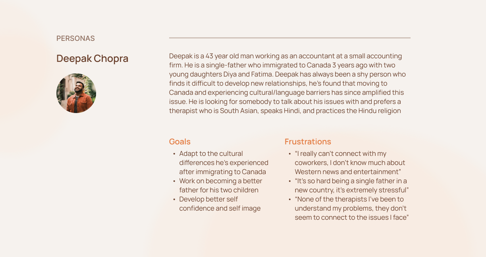
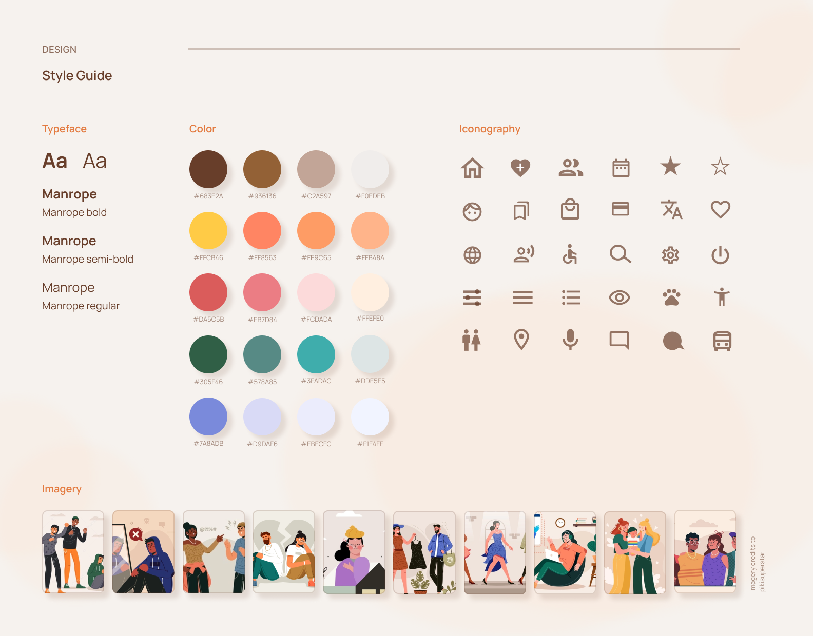

Mindly
Mindly is an application that connects newly immigrated individuals to qualified therapists in their area.
Role UX/UI Designer, UX Researcher
Duration 1 month
Tools Adobe XD, Adobe Illustrator, Miro
Problem
Canadian Immigrants are often presented with a unique set of challenges that can be difficult to navigate through alone.
Mental health services such as therapists can be extremely inaccessible for this demographic, these individuals express difficulties in finding help from professionals who can communicate in their native language, can understand the distinctive issues they face (culture shock, racial identity, homesickness, etc), and are taking on new patients.
RESEARCH
Primary Research
Interviews
I conducted in-depth remote interviews with 30 newly immigrated Canadian immigrants (aged 18 - 60) to gain a better understanding of this demographic to help address their needs and build a meaningful solution.
Insights
Interviews also showed that interviewees are hesitant towards seeking mental health treatment such as therapists due to 2 main constraints:
1. Difficulty finding a compatible therapist, even after trying out several practices
2. Lack of resources that help with finding therapists

Secondary Research
Insights
Roughly 21% of the Canadian population are first-generation immigrants
Most Canadian immigrants face a mental health decline after living in Canada for a while, with influencing factors such as: language, employment, housing, access to services, transporation, cultural differences, children, prejudice, isolation, and the weather all contributing to a mental health decline.
Exploring Existing Solutions
I conducted a competitive audit to understand more about the main industry players and the strategies they employ to make their solutions successful.
EMPATHIZE
Creating Personas

IDEATION
Exploring Different Concepts
Initial Concepts
Some initial concepts that were explored to tackle this issue:
VR Therapy
Simulated counselling environments with a virtual AI-powered therapist who is able to converse in 100+ languages and provide religious or non-religious therapy.
This was ruled out because VR gear is not accessible to most people and can be extremely costly.
Chatbot Therapy
AI-powered chatbot that can help with common questions and provide lifestyle suggestions.
This was ruled out because Chatbots are missing a human aspect and fail to create an intimate bond with the users, possibly resulting in users feeling that their concerns are not acknowledged.
Building a Community
I wanted users to feel a sense of community while being on the app, I didn't want it to strictly feel like an "in and out" situation where they find a therapist, book an appointment, then leave.
In order to achieve this, I decided to implement a community Q&A section where users are able to freely (and anonymously) post questions that are on their mind and have those questions answered by therapists on the app. Users are then able to read through the questions posted by other users and view the answers suggested by the therapists.
DESIGN
Planning the Look
Low Fidelity Wireframes
Usability Study
A usability study was conducted to observe how potential users would interact with the application. This helps identify what features of the application are successful in completing its role and what features need futher improvement.
Post-Usability Study Refinement
After conducting a usability study, I was able to identify the features that users struggled with, I then set out to refine these features so that users can feel more comfortable with the experience.
Implementation #1 - Advanced Filtering
Users reported that the original filtering feature was not specific enough to narrow down a suitable therapist, so I made some changes to make the filtering process more tailored.
Implementation #2 - Increased Credibility
Users reported that the original therapist page lacked credibility. They preferred to read previous patient testimonials or reviews to gain a better understanding of the therapists before booking an appointment.
Implementation #3 - Language Adjustments
Users experienced difficulties trying when trying to adjust the language within the app, in the initial design, the language adjustment feature was tucked away in the settings page, in the refined design, this feature was brought out into the side menu.
Style Guide

Final Designs
SOLUTION
Key Features
Understanding the therapist
Upon opening the therapist's profile, the user is presented with relevant information about the therapist and their practice.
This includes information such as their specialities, language(s) spoken, answers to community questions, reviews, and office amentities.
Community questions
Users of the Mindly application are able to post questions they would like to seek guidance on (eg. How do I deal with homesickness?) and different therapists are able to comment under the question and provide their own insights.
This feature is intended to help users "sample" a therapist before they commit to booking an appointment, by reading the therapists' answers, the user can gain a general understanding of how the therapist handle different topics.
This feature is also intended for therapists to gain exposure on the application, the more a therapist answers questions, the more likely users are able to see them and check out their practices.
Advanced Filtering
Each user is unique in their lifestyles and the troubles they face, the advanced filtering option allows individuals to hone in on a specific area of help or a specific therapist that is very qualified and equipped to help them with the struggles they face.
Next steps
Design isn't a linear process - I want to conduct more usability studies with a wider range of participants to refine the design and provide a seamless digital solution.
Additional features - I am currently working on a payment process within the app, allowing users to both book and pay for their appointment on the app through different forms of payment (Visa, PayPal, etc) or health insurance.